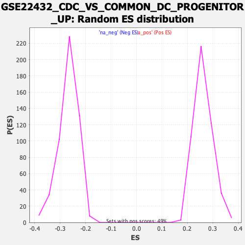

Profile of the Running ES Score & Positions of GeneSet Members on the Rank Ordered List
| Dataset | qlf.KOd4vsWTd4_gsea_score |
| Phenotype | NoPhenotypeAvailable |
| Upregulated in class | na_neg |
| GeneSet | GSE22432_CDC_VS_COMMON_DC_PROGENITOR_UP |
| Enrichment Score (ES) | -0.5923451 |
| Normalized Enrichment Score (NES) | -2.211465 |
| Nominal p-value | 0.0 |
| FDR q-value | 0.0 |
| FWER p-Value | 0.0 |
| SYMBOL | RANK IN GENE LIST | RANK METRIC SCORE | RUNNING ES | CORE ENRICHMENT | |
|---|---|---|---|---|---|
| 1 | SIK1 | 17 | 6.481 | 0.0249 | No |
| 2 | UNC119 | 76 | 4.880 | 0.0393 | No |
| 3 | NOTCH2 | 235 | 3.735 | 0.0393 | No |
| 4 | RTN4 | 609 | 2.595 | 0.0139 | No |
| 5 | JMJD1C | 1415 | 1.527 | -0.0577 | No |
| 6 | LXN | 1474 | 1.475 | -0.0573 | No |
| 7 | TFEB | 1561 | 1.401 | -0.0598 | No |
| 8 | NSMCE1 | 1905 | 1.148 | -0.0883 | No |
| 9 | RAPGEF1 | 2161 | 0.976 | -0.1089 | No |
| 10 | ACTG1 | 2441 | 0.835 | -0.1325 | No |
| 11 | RAB33B | 2589 | 0.761 | -0.1436 | No |
| 12 | RPS21 | 2853 | 0.648 | -0.1663 | No |
| 13 | POLD1 | 2999 | 0.597 | -0.1779 | No |
| 14 | COTL1 | 3035 | 0.584 | -0.1789 | No |
| 15 | TRAF5 | 3135 | 0.551 | -0.1862 | No |
| 16 | RFC2 | 3224 | 0.518 | -0.1926 | No |
| 17 | ITIH5 | 3270 | 0.502 | -0.1949 | No |
| 18 | COL23A1 | 3279 | 0.497 | -0.1936 | No |
| 19 | GIMAP5 | 3443 | 0.448 | -0.2075 | No |
| 20 | P4HTM | 3579 | 0.404 | -0.2189 | No |
| 21 | ADGRE5 | 3682 | 0.373 | -0.2273 | No |
| 22 | SMG1 | 3825 | 0.336 | -0.2396 | No |
| 23 | GPD2 | 3936 | 0.308 | -0.2490 | No |
| 24 | TEC | 3938 | 0.307 | -0.2478 | No |
| 25 | CNKSR3 | 3991 | 0.291 | -0.2517 | No |
| 26 | RIN3 | 4126 | 0.258 | -0.2636 | No |
| 27 | CFP | 4537 | 0.159 | -0.3025 | No |
| 28 | CCDC71L | 4593 | 0.145 | -0.3073 | No |
| 29 | SH3GLB1 | 4604 | 0.144 | -0.3076 | No |
| 30 | ATF3 | 4719 | 0.120 | -0.3182 | No |
| 31 | RALGPS2 | 4774 | 0.111 | -0.3229 | No |
| 32 | RCSD1 | 4779 | 0.110 | -0.3229 | No |
| 33 | GRHPR | 4961 | 0.077 | -0.3400 | No |
| 34 | MAD2L1 | 4971 | 0.076 | -0.3406 | No |
| 35 | DGKD | 5166 | 0.041 | -0.3592 | No |
| 36 | MBNL1 | 5171 | 0.040 | -0.3594 | No |
| 37 | ZMYND8 | 5219 | 0.032 | -0.3638 | No |
| 38 | SNX29 | 5230 | 0.031 | -0.3647 | No |
| 39 | DERL3 | 5254 | 0.027 | -0.3668 | No |
| 40 | STX2 | 5334 | 0.013 | -0.3744 | No |
| 41 | CKLF | 5371 | 0.006 | -0.3778 | No |
| 42 | SH3BP1 | 5578 | -0.028 | -0.3976 | No |
| 43 | TSHZ1 | 5583 | -0.029 | -0.3979 | No |
| 44 | CEP128 | 5649 | -0.039 | -0.4040 | No |
| 45 | EMID1 | 5671 | -0.042 | -0.4059 | No |
| 46 | PSD4 | 5716 | -0.050 | -0.4099 | No |
| 47 | GAB3 | 5766 | -0.059 | -0.4144 | No |
| 48 | MYO18A | 5942 | -0.087 | -0.4310 | No |
| 49 | BIRC3 | 5952 | -0.089 | -0.4315 | No |
| 50 | FANCA | 6006 | -0.098 | -0.4362 | No |
| 51 | SYNRG | 6056 | -0.107 | -0.4405 | No |
| 52 | RFX3 | 6181 | -0.130 | -0.4519 | No |
| 53 | MAPK14 | 6208 | -0.136 | -0.4539 | No |
| 54 | MTA3 | 6279 | -0.150 | -0.4601 | No |
| 55 | RNF139 | 6385 | -0.173 | -0.4695 | No |
| 56 | CHIC2 | 6490 | -0.197 | -0.4787 | No |
| 57 | SAFB2 | 6496 | -0.198 | -0.4784 | No |
| 58 | CSK | 6725 | -0.256 | -0.4994 | No |
| 59 | GALNT10 | 6751 | -0.261 | -0.5007 | No |
| 60 | NDST1 | 6762 | -0.264 | -0.5006 | No |
| 61 | CSRP2 | 6774 | -0.267 | -0.5006 | No |
| 62 | NDUFB11 | 6787 | -0.270 | -0.5007 | No |
| 63 | CIB1 | 6900 | -0.301 | -0.5102 | No |
| 64 | INPP5D | 6913 | -0.305 | -0.5102 | No |
| 65 | FAM107B | 6942 | -0.313 | -0.5116 | No |
| 66 | XKRX | 7116 | -0.363 | -0.5268 | No |
| 67 | SH3PXD2A | 7123 | -0.364 | -0.5259 | No |
| 68 | AP1S2 | 7335 | -0.430 | -0.5445 | No |
| 69 | NRM | 7435 | -0.463 | -0.5522 | No |
| 70 | AFF3 | 7499 | -0.491 | -0.5563 | No |
| 71 | OTUB2 | 7549 | -0.511 | -0.5589 | No |
| 72 | GDAP2 | 7702 | -0.571 | -0.5713 | No |
| 73 | WDR44 | 7706 | -0.573 | -0.5692 | No |
| 74 | SLC37A4 | 7707 | -0.574 | -0.5669 | No |
| 75 | ZBTB24 | 7710 | -0.574 | -0.5647 | No |
| 76 | PARP4 | 7793 | -0.609 | -0.5702 | No |
| 77 | SP4 | 7803 | -0.611 | -0.5685 | No |
| 78 | CDC42EP3 | 7875 | -0.642 | -0.5728 | No |
| 79 | SSBP3 | 7891 | -0.648 | -0.5716 | No |
| 80 | RELL1 | 7987 | -0.687 | -0.5779 | No |
| 81 | KLF3 | 8027 | -0.704 | -0.5788 | No |
| 82 | ULK2 | 8087 | -0.734 | -0.5815 | No |
| 83 | HCLS1 | 8200 | -0.788 | -0.5891 | Yes |
| 84 | TMEM64 | 8213 | -0.796 | -0.5870 | Yes |
| 85 | BBS9 | 8216 | -0.797 | -0.5839 | Yes |
| 86 | APPL2 | 8223 | -0.802 | -0.5812 | Yes |
| 87 | GRB2 | 8245 | -0.814 | -0.5799 | Yes |
| 88 | HERC2 | 8270 | -0.827 | -0.5789 | Yes |
| 89 | ATAD2B | 8354 | -0.871 | -0.5833 | Yes |
| 90 | ACYP1 | 8384 | -0.896 | -0.5825 | Yes |
| 91 | INSR | 8390 | -0.906 | -0.5792 | Yes |
| 92 | HIP1R | 8391 | -0.908 | -0.5755 | Yes |
| 93 | MXD4 | 8427 | -0.931 | -0.5751 | Yes |
| 94 | ARHGAP18 | 8553 | -1.004 | -0.5831 | Yes |
| 95 | RAPGEF2 | 8573 | -1.013 | -0.5807 | Yes |
| 96 | TAB2 | 8576 | -1.015 | -0.5768 | Yes |
| 97 | CERK | 8588 | -1.021 | -0.5737 | Yes |
| 98 | FERMT3 | 8701 | -1.090 | -0.5800 | Yes |
| 99 | ARFGEF2 | 8741 | -1.113 | -0.5792 | Yes |
| 100 | TNK2 | 8772 | -1.128 | -0.5775 | Yes |
| 101 | CNST | 8782 | -1.133 | -0.5737 | Yes |
| 102 | TMEM86B | 8842 | -1.193 | -0.5746 | Yes |
| 103 | ARID1B | 8950 | -1.274 | -0.5797 | Yes |
| 104 | SIKE1 | 8997 | -1.318 | -0.5787 | Yes |
| 105 | KIDINS220 | 9033 | -1.339 | -0.5766 | Yes |
| 106 | TRPV2 | 9039 | -1.344 | -0.5716 | Yes |
| 107 | NARF | 9065 | -1.374 | -0.5684 | Yes |
| 108 | KLHL28 | 9074 | -1.384 | -0.5635 | Yes |
| 109 | SH3BGRL3 | 9090 | -1.398 | -0.5592 | Yes |
| 110 | BMP2K | 9135 | -1.438 | -0.5576 | Yes |
| 111 | LCP2 | 9146 | -1.453 | -0.5526 | Yes |
| 112 | UBLCP1 | 9170 | -1.488 | -0.5487 | Yes |
| 113 | CEP120 | 9231 | -1.556 | -0.5482 | Yes |
| 114 | CDKN1B | 9292 | -1.611 | -0.5474 | Yes |
| 115 | LYST | 9329 | -1.649 | -0.5441 | Yes |
| 116 | KCNAB2 | 9354 | -1.678 | -0.5396 | Yes |
| 117 | SNX14 | 9355 | -1.678 | -0.5327 | Yes |
| 118 | ANTXR2 | 9363 | -1.687 | -0.5264 | Yes |
| 119 | ZCCHC18 | 9373 | -1.699 | -0.5204 | Yes |
| 120 | TBXA2R | 9491 | -1.869 | -0.5240 | Yes |
| 121 | GRAMD1A | 9508 | -1.888 | -0.5178 | Yes |
| 122 | ALDH2 | 9522 | -1.906 | -0.5113 | Yes |
| 123 | MTMR6 | 9530 | -1.916 | -0.5041 | Yes |
| 124 | TAOK3 | 9537 | -1.929 | -0.4968 | Yes |
| 125 | TBC1D14 | 9547 | -1.960 | -0.4896 | Yes |
| 126 | SMPDL3A | 9599 | -2.036 | -0.4862 | Yes |
| 127 | CDC42SE2 | 9619 | -2.072 | -0.4796 | Yes |
| 128 | SLC25A53 | 9638 | -2.101 | -0.4727 | Yes |
| 129 | TBC1D10C | 9639 | -2.101 | -0.4641 | Yes |
| 130 | MADD | 9666 | -2.159 | -0.4578 | Yes |
| 131 | JAK1 | 9673 | -2.169 | -0.4495 | Yes |
| 132 | TRAF3IP2 | 9684 | -2.191 | -0.4415 | Yes |
| 133 | SLC35D2 | 9727 | -2.268 | -0.4363 | Yes |
| 134 | TXNDC16 | 9732 | -2.283 | -0.4273 | Yes |
| 135 | ARHGAP15 | 9740 | -2.309 | -0.4185 | Yes |
| 136 | GDI1 | 9795 | -2.413 | -0.4138 | Yes |
| 137 | F2RL1 | 9866 | -2.554 | -0.4102 | Yes |
| 138 | RAB4B | 9871 | -2.558 | -0.4001 | Yes |
| 139 | CCPG1 | 9953 | -2.783 | -0.3965 | Yes |
| 140 | RDH12 | 9991 | -2.884 | -0.3883 | Yes |
| 141 | MGST2 | 10010 | -2.932 | -0.3780 | Yes |
| 142 | PRKACB | 10035 | -3.007 | -0.3680 | Yes |
| 143 | CYTH4 | 10061 | -3.100 | -0.3577 | Yes |
| 144 | GNA15 | 10083 | -3.191 | -0.3467 | Yes |
| 145 | DNAH8 | 10139 | -3.424 | -0.3380 | Yes |
| 146 | CTSO | 10162 | -3.487 | -0.3258 | Yes |
| 147 | NEDD9 | 10169 | -3.516 | -0.3120 | Yes |
| 148 | TSPYL4 | 10232 | -3.866 | -0.3022 | Yes |
| 149 | SERINC5 | 10254 | -4.037 | -0.2877 | Yes |
| 150 | DHRS7 | 10283 | -4.208 | -0.2731 | Yes |
| 151 | SMAP2 | 10305 | -4.361 | -0.2573 | Yes |
| 152 | CDC42SE1 | 10330 | -4.492 | -0.2412 | Yes |
| 153 | SYNE1 | 10354 | -4.703 | -0.2242 | Yes |
| 154 | LSP1 | 10368 | -4.813 | -0.2058 | Yes |
| 155 | PLEKHG2 | 10373 | -4.869 | -0.1862 | Yes |
| 156 | CAMK1D | 10404 | -5.209 | -0.1678 | Yes |
| 157 | POU2AF1 | 10419 | -5.307 | -0.1474 | Yes |
| 158 | KLHL6 | 10424 | -5.421 | -0.1256 | Yes |
| 159 | ARHGAP25 | 10454 | -5.987 | -0.1039 | Yes |
| 160 | CAPN2 | 10458 | -6.077 | -0.0793 | Yes |
| 161 | LGMN | 10459 | -6.161 | -0.0540 | Yes |
| 162 | CXCR5 | 10476 | -6.612 | -0.0285 | Yes |
| 163 | S1PR1 | 10497 | -7.694 | 0.0011 | Yes |
